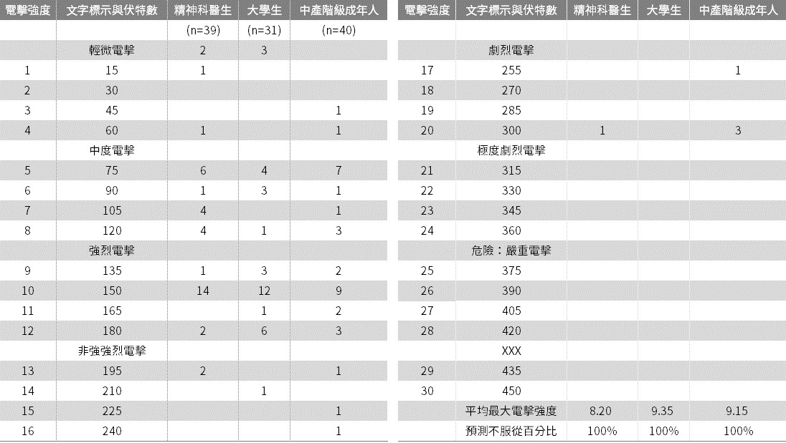

服從權威
egg
Jan. 7, 2021
緣由


服從權威
有多少罪惡，假服從之名而行？
- 史丹利‧米爾格蘭 (1933/8/15 ─ 1984/12/20)
- 任職教授
- 耶魯大學
- 哈佛大學
- 紐約市立大學
- 米爾格蘭實驗
- 六度分隔理論
米爾格蘭實驗
研究方法
在所有的道德原則中，最為人所接受的是：
「人不應該傷害一個對自己無害又無威脅的無助者。這個原則就是我們用來反對服從的力量。」
受試者取得
場所與人員
- 場所：耶魯大學裡
- 人員
- 受試者當老師 1 名 (不知情)
- 受害者當學習者 1 名 (知情)
- 實驗者當專家 1 名
電擊產生器
- 30 個按鈕
- 15v ─ 450v，每紐增加 15v
受試者會先體驗 45v 電擊感受。
電擊指示
- 學習者答錯，受試者給予電擊。
- 被指示：每錯一次，強度升一級。
- 必須宣布電擊強度。
- 最強電壓二次電擊後，實驗終止。
實驗者催促指令
- 請繼續或請持續。
- 實驗需要你繼續配合。
- 你的繼續是絕對不可或缺的。
- 你沒有別的選擇，你「必須」繼續下去。
催促 1 ~ 催促 4 用完，受試者仍拒絕服從，實驗終止。
特殊催促指令
- 學習者會不會受到永久性傷害：雖然電擊會造成痛苦，但絕不會造成永久性的身體傷害，所以請繼續。
- 學習者不想繼續：無論學習者喜不喜歡，你都必須繼續下去，直到他正確學會所有的成對字彙為止。所以請繼續。
實驗設定
實驗進行
預期行為
道德？
依照道德判斷，甚麼樣的行為才叫適當，大家會異口同聲地說，不服從權威才叫適當。
實驗結果
接近受害者
- 遠端回饋：安置在另一房間，看不到，聽不到。
- 聲音回饋：在隔壁房間，看不到，聽得到。
- 近端回饋：在同一個房間，距離數呎。
- 近端觸摸回饋：受試者必須強迫受害者把手按到電擊盤上。
結果
個人、環境
當被要求思索服從實驗的內容時，絕大多數人一開始都會採取這樣的思維。他們只注意到獨立自主的個人的性格，而忽略了人所處的環境。由於採取這樣的思考進路，因此絕大多數人都傾向於預期只有極少數人才會死心塌地聽從實驗者的命令。
服從
- 服從的本質，在於一個人把自己視為他人期望的工具，因此不再認為自己要為自己的行為負責。(思想上的調整)
- 服從是社會生活結構的基本元素。權威系統是共同生活的要件，唯有離群索居的人才不需要理會 (無論違逆還是順從) 他人的命令。
- 個人道德感產生的力量，遠不如社會迷思的力量更讓我們信服。
- 服從的受試者最常見的想法調整，就是認為自己不用為自己的行為負責。
代理人
代理人心態
從模控學的觀點來看，代理人心態的產生，在於自我管控的個體為了在階序控制系統中運作，而做了內部改變。
服從的過程
- 轉變成代理人心態的第一個條件是察覺到具正當性的權威。
- 轉變成代理人心態的第二個條件是把人定義為權威系統的一部分。
- 轉變成代理人心態最大的影響是，人只對指揮他的權威負責，而不對權威下令的行為內容負責。
- 道德感並未消失，只是換了一個焦點：下屬感到羞恥或自豪，完全取決於自己是否適當執行權威交代的行為。
代理人
從主體的觀點來看，在某個社會情境中，當人定義自己應該完全接受上級的指揮時，這個人便處於代理人心態。在這種狀況下，個人不再認為自己應該為自己的行動負責，而是把自己當成實現他人期望的工具。
實驗變形
實驗變形──條件設定
- 新基準條件：改到耶魯大學地下室 + 心臟問題
- 人員變動：實驗者、受害者人格特質
- 權威的接近：實驗者的距離、監督強度
- 受試者是女性
- 受害者的有限契約：不能放棄義務
- 環境機構
- 受試者自由選擇電擊強度
實驗再變形──權威設定
- 學習者要求遭受電擊
- 由一般人下令
- 受試者擔任旁觀者
- 權威擔任受害者
- 兩個權威：矛盾指令
- 兩個權威：一個擔任受害者
實驗的倫理
- 批評
- 實驗後續長期回饋